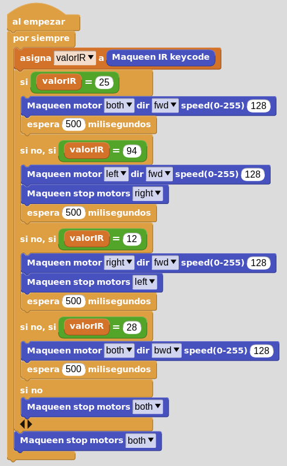

Reto 06
Este reto consiste en asignar a cuatro teclas de una mando a distancia por infrarrojos (IR), los cuatro movimientos básicos del robot. Cuando se pulsen provocarán respectivamente movimientos como: adelante, atrás, izquierda y derecha por un tiempo. Para ello, primero debemos meter el programa del reto anterior en la micro:bit, para descubrir cual es el código numérico de cada tecla del mando que vamos a usar para controlar los movimientos de maqueen.
Código:
En nuestro caso la teclas del mando tienen los siguientes códigos numéricos:
- Adelante: 25
- Derecha: 94
- Izquierda: 12
- Atrás: 28
